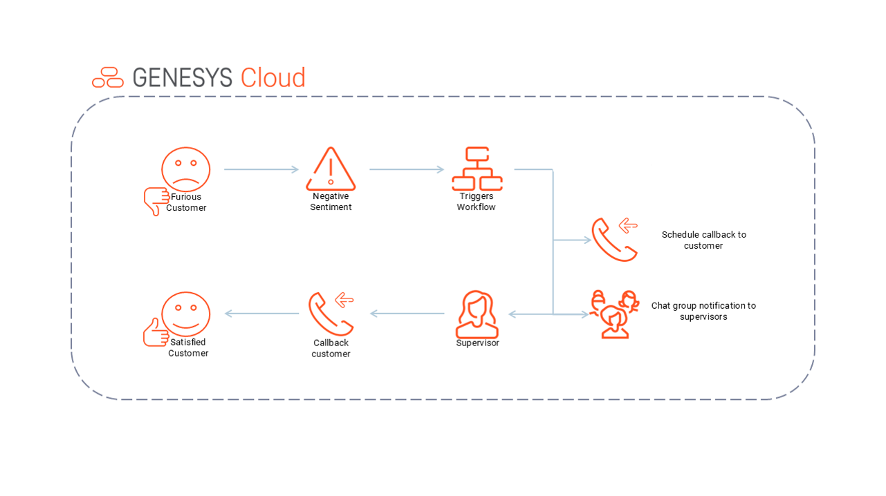

Negative Sentiment Callback Automation
Case Study 1: Real-Time AI Sentiment Detection and Proactive Recovery
⚠️ The Problem
Contact centers often lack real-time visibility into customer sentiment.
Negative experiences go unnoticed until after the interaction, leading to
customer churn, escalations, and poor satisfaction scores.
🤖 AI-Driven Solution
Genesys AI analyzes live conversations and detects negative sentiment.
When a threshold is crossed, an automated workflow triggers a callback
and notifies supervisors for immediate intervention.
🔧 MokSa Implementation
MokSa configured real-time sentiment analysis, automated callback workflows,
supervisor notifications, and escalation logic using Genesys Cloud AI
and Architect workflows.
Up to 30%
Operational Cost Reduction (Gartner)
